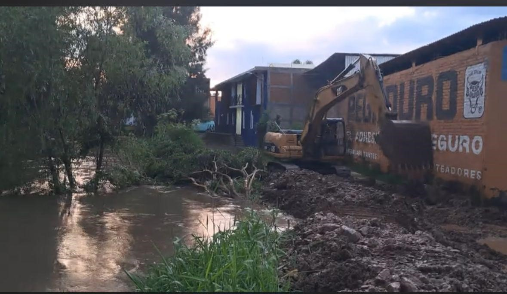
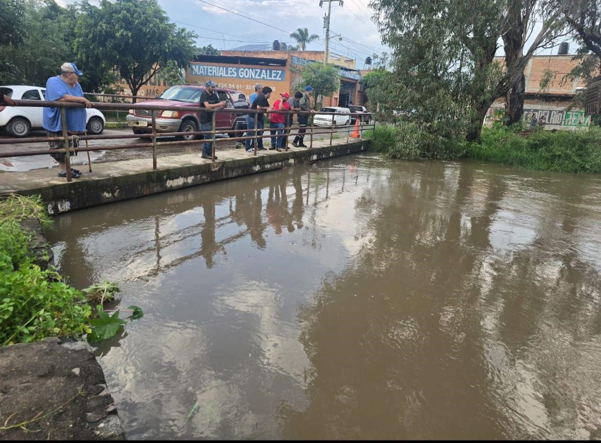
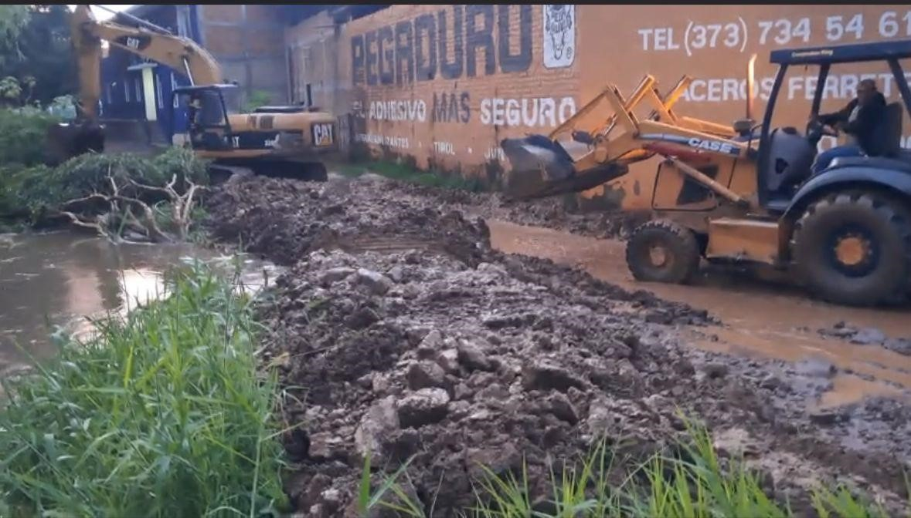
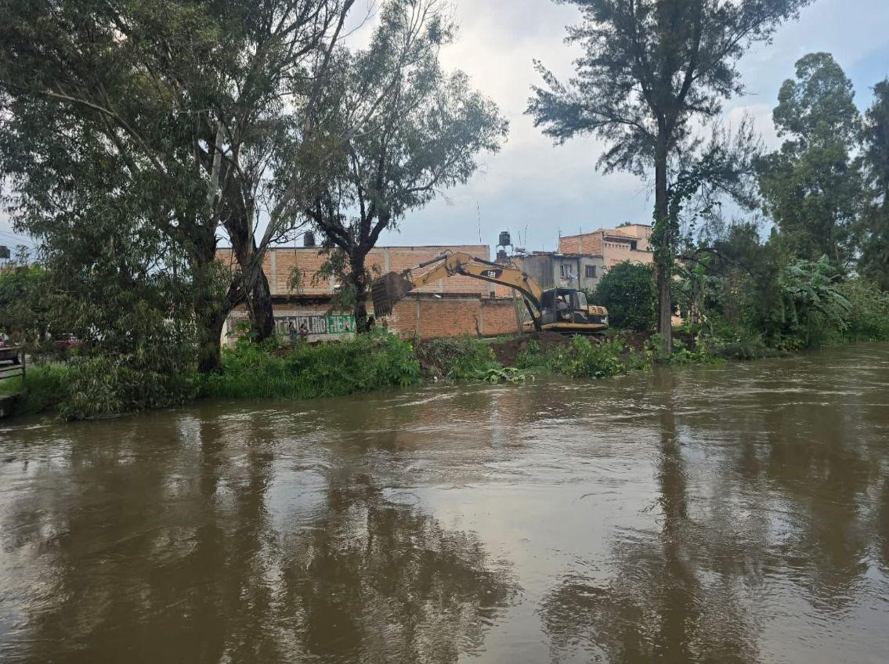

Principales consecuencias
- 1. Muerte de peces y animales acuáticos: La contaminación ha reducido drásticamente los niveles de oxígeno en el agua, provocando la muerte de peces, ranas y otras especies que dependen del ecosistema acuático del Río Achichilco.
- 2. Mal olor y contaminación visual: Los residuos acumulados generan malos olores y una apariencia desagradable, afectando tanto el entorno natural como la imagen del municipio ante visitantes y pobladores.
- 3. Riesgos de salud para las personas: El contacto con el agua contaminada puede causar enfermedades gastrointestinales, infecciones en la piel y problemas respiratorios, especialmente entre niños y adultos mayores.
- 4. Daños al ecosistema local: La pérdida de biodiversidad, el deterioro del suelo y la contaminación del aire circundante afectan gravemente el equilibrio ambiental de Ixtlahuacán del Río y sus comunidades cercanas.




Impacto en la comunidad educativa
Durante la temporada de lluvias, el exceso de agua y el desbordamiento parcial del Río Achichilco provocaron inundaciones en el CECyTEJ Plantel 08 Ixtlahuacán del Río. Este hecho generó preocupación entre las autoridades municipales y educativas debido al riesgo que representaba para los estudiantes y habitantes de la zona. Como medida preventiva, se realizaron bloqueos temporales en las calles aledañas al plantel, con el objetivo de evitar accidentes y proteger a la comunidad. Este evento evidenció la necesidad urgente de implementar acciones de limpieza, prevención y planeación urbana para reducir los riesgos en futuras temporadas de lluvia.